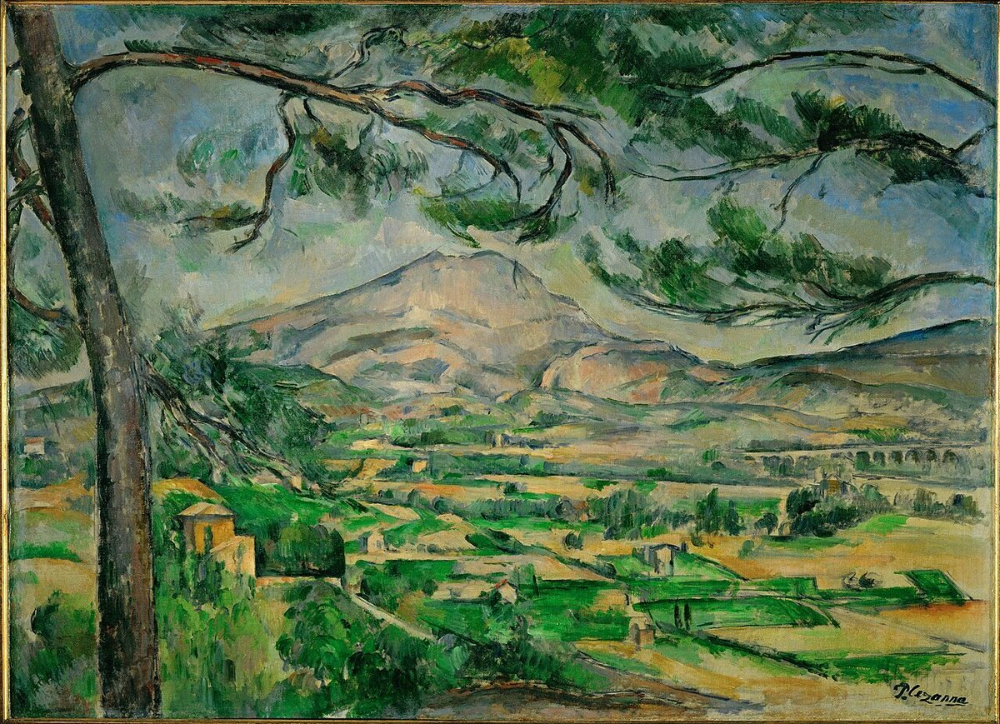
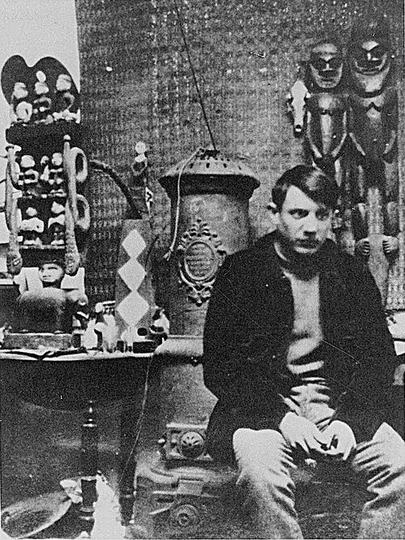
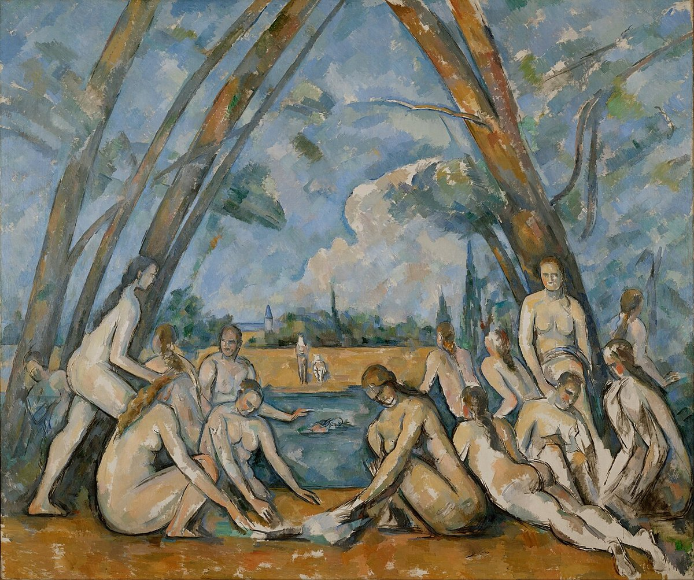
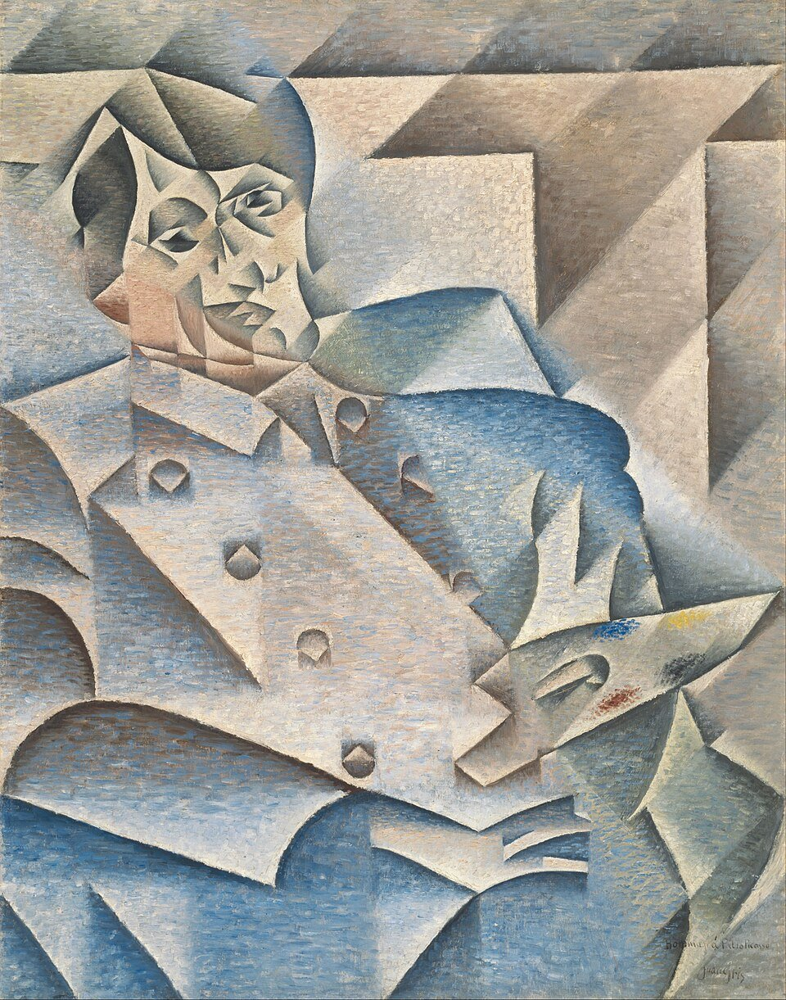
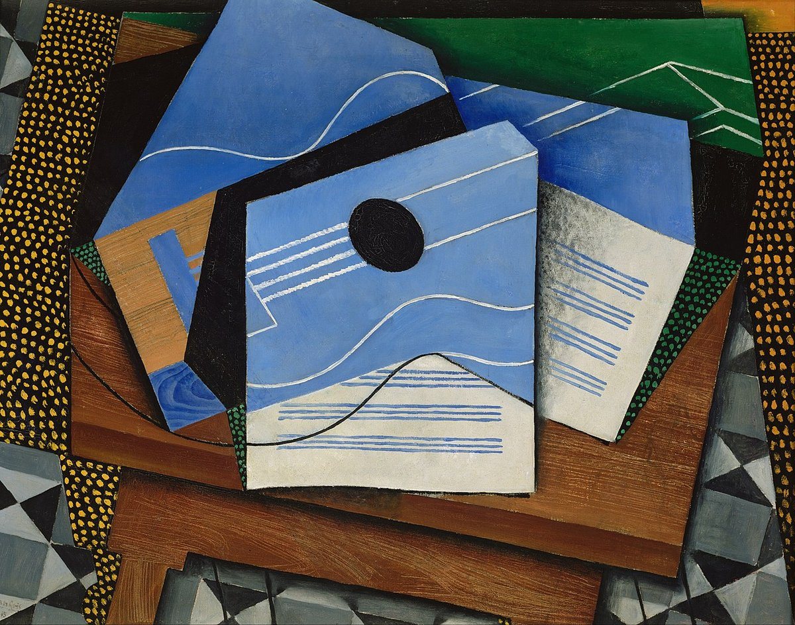
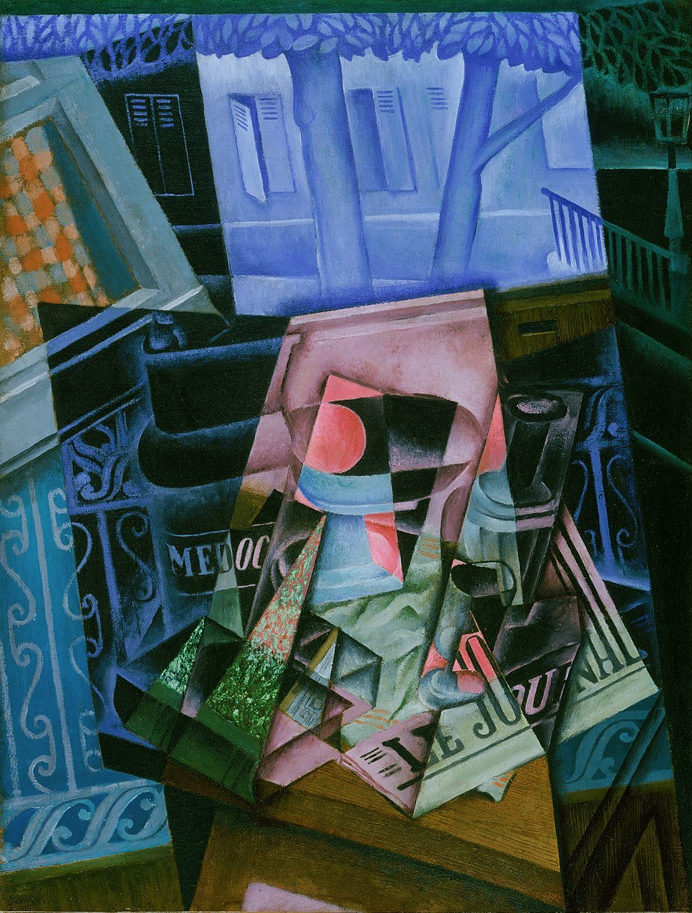
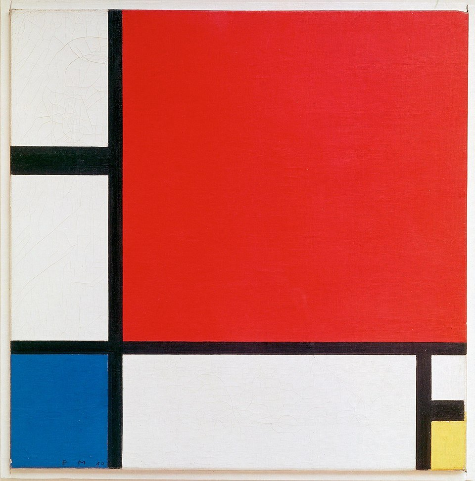

1906年10月、セザンヌがこの世を去った。そして絵画が壊れ始めた。
ポール・セザンヌポール・セザンヌ（1839–1906）
フランスの後期印象派の画家。「近代絵画の父」と呼ばれる。自然を円筒・球・円錐で捉えよと主張し、ピカソとブラックに決定的な影響を与えた。は1906年10月22日、故郷エクス＝アン＝プロヴァンスで67歳で亡くなった。翌1907年、パリのサロン・ドートンヌサロン・ドートンヌ（Salon d'Automne）
1903年にパリで始まった秋の美術展覧会。公式サロンより革新的な作品を受け入れた。で大規模な回顧展が開かれた。56点の油彩と水彩が並んだ。パリの若い画家たちにとって、それは啓示だった。
セザンヌは晩年、故郷のサント＝ヴィクトワール山サント＝ヴィクトワール山（Mont Sainte-Victoire）
南フランス・プロヴァンス地方にある石灰岩の山。標高1,011m。セザンヌが生涯をかけて80回以上描いた。を繰り返し描いた。油彩だけで36点、水彩を加えれば80点以上。だが彼が追いかけていたのは光の移ろいではない。印象派がそれをやった。セザンヌが欲しかったのは、山の構造だった。表面ではなく、奥にあるもの。「自然を円筒、球、円錐によって扱いなさい」——友人エミール・ベルナールへの手紙に残された有名な一節だ。

ポール・セザンヌ『サント＝ヴィクトワール山』（1885–87年頃）｜油彩・カンヴァス｜コートールド美術館蔵｜同じ山を80回以上描いた連作のうちの1点。建物や木々は幾何学的な面に還元されている。
セザンヌの絵をよく見ると、遠近法が「正しくない」。テーブルの上の果物は、上から見た角度と横から見た角度が1枚の絵の中に混在する。これは「間違い」ではない。セザンヌは意図的に複数の視点を1枚の絵に織り込んでいた。ただし、それはまだ控えめな実験だった。
左: ルネサンスの一点透視図法。右: キュビズムの多視点。対象を複数の角度から同時に描き、1枚の平面に再構築する。
セザンヌが残した着想を爆発的に推し進めたのが、パブロ・ピカソパブロ・ピカソ（1881–1973）
スペイン生まれの画家・彫刻家。ブラックとともにキュビズムを創始した。——1907年当時25歳——とジョルジュ・ブラックジョルジュ・ブラック（1882–1963）
フランスの画家。ピカソとともにキュビズムを共同で発展させた。だ。だが「なぜ彼らは壊す必要があったのか」を理解するには、もう少し背景が必要だ。

パブロ・ピカソ
Pablo Ruiz Picasso / 1881–1973
1907年に『アヴィニョンの娘たち』を完成。セザンヌの幾何学とアフリカ彫刻を融合させ、ルネサンス以来の絵画の約束を破壊した。写真はモンマルトルのアトリエにて（1908年）。背後にアフリカ彫刻のコレクションが見える。
なぜ壊す必要があったのか——3つの圧力
第一の圧力は、写真の存在だ。1839年にダゲレオタイプダゲレオタイプ（Daguerreotype）
1839年にフランスのルイ・ダゲールが実用化した世界初の商業的写真技法。銀メッキした銅板に像を定着させる。露光時間は当初15分以上かかった。が発明されて以来、「見えるままに描く」という絵画の存在意義は根底から揺らいでいた。写真は遠近法を完璧に再現する。光と影を忠実に捉える。画家が何百時間かけて描いたものを、カメラは一瞬で記録する。印象派は「写真にはできない光の表現」で応答した。セザンヌは「写真には見えない構造の表現」で応答した。キュビズムは、その先に進んだ——写真が絶対に捉えられないもの、つまり「複数の視点」「内部構造」「時間の重なり」を描くことで。
第二の圧力は、アフリカ彫刻との出会いだ。ピカソは1907年、パリのトロカデロ宮殿トロカデロ宮殿（Palais du Trocadéro）
パリの民族学博物館。1878年の万博のために建設された。アフリカ、オセアニア、アジアの美術品を収蔵していた。の民族学博物館でアフリカの仮面と彫刻を見た。衝撃だった。それらは写実とは無縁だが、人間の本質を力強く捉えていた。顔を抽象化し、目と口を幾何学的な記号に変換し、それでも「顔」として強烈に存在する。写実だけが正解ではない。ピカソはそれを確信した。

セザンヌ『大水浴図（Les Grandes Baigneuses）』（1898–1905年）｜油彩・カンヴァス、210.5×250.8cm｜フィラデルフィア美術館蔵｜セザンヌ最大の野心作。人体は幾何学的な三角形の構図に組み込まれ、個々の肉体よりも全体の構造が優先されている。ピカソの『アヴィニョンの娘たち』に直接影響を与えた。
第三の圧力は、時代の空気だ。1905年にアインシュタインが特殊相対性理論特殊相対性理論（1905年）
アインシュタインが発表した理論。時間と空間は観測者の速度によって変化するという、直感に反する結論を導いた。「絶対的な視点はない」という考えの科学的裏付けとなった。を発表し、「絶対的な視点」という概念自体が物理学で崩壊しつつあった。哲学者アンリ・ベルクソンアンリ・ベルクソン（1859–1941）
フランスの哲学者。時間は固定された瞬間の連続ではなく「持続」であると論じた。知覚と記憶の関係を探求し、芸術家たちに大きな影響を与えた。は「時間は固定された瞬間の連続ではなく、流れる持続である」と論じていた。数学では非ユークリッド幾何学非ユークリッド幾何学
平行線の公準を否定する幾何学。19世紀にリーマン、ロバチェフスキーらが確立した。空間そのものが曲がりうるという考えを数学的に証明した。が空間そのものの曲がりを記述していた。「1つの正しい見方」という前提自体が崩れ始めていた。ピカソとブラックが遠近法を壊したのは、彼らだけの奇行ではない。時代全体が「唯一の正解」を解体しつつあった。
"The hard-and-fast rules of perspective which it succeeded in imposing on art were a ghastly mistake which it has taken four centuries to redress."
遠近法が芸術に強制した厳格なルールは、修正するのに4世紀を要した恐ろしい過ちだった。
— ジョルジュ・ブラック、The Observer紙（1957年）
1907年、ピカソは巨大なカンヴァス（243.9×233.7cm）に『アヴィニョンの娘たち』を完成させた。5人の裸婦が幾何学的な面に分割され、右側の2人にはアフリカの仮面のような造形が与えられている。正面と横顔が同時に見える。友人たちの反応は散々だった。マティスアンリ・マティス（1869–1954）
フォーヴィスムの中心人物。ピカソの最大のライバルであり友人でもあった。は怒り、ブラックは最初「まやかしだ」と言った。だがブラックはこの絵に引き寄せられた。翌1908年、彼は南仏レスタックの風景を幾何学的な立体に還元して描き、批評家ヴォーセルの「小さな立方体の奇妙な集まり」という評から、キュビズムという名前が生まれた。
| ルネサンス〜印象派 | キュビズム | |
|---|---|---|
| 視点 | 1つの固定された視点 | 複数の視点を同時に重ねる |
| 空間 | 奥行きの錯覚（遠近法） | 平面に圧縮する |
| 対象 | 見えるままに描く | 分解し、知っている形すべてを再構築する |
| 色彩 | 光と影を再現する | 形を識別するための手段（褐色・灰色中心） |
| 目標 | 「見えている世界」の再現 | 「知っている世界」の再構築 |
読む前に確認 — よくある誤解
✗ よくある誤解
キュビズムは「子供の絵のような下手な絵」
✓ 実際は
ピカソは14歳で美術アカデミーの入試を1日で突破した。写実力を極めた上で、意図的に壊すことを選んだ
✗ よくある誤解
キュビズムは完全な抽象画だ
✓ 実際は
主題は瓶、ギター、新聞、人物の顔など現実の対象。分解しても「何が描かれているか」は常に辿れる
✗ よくある誤解
ピカソが一人で発明した
✓ 実際は
ピカソとブラックの共同作業。2人の絵は区別がつかないほど似ていた
視点を重ねる——コーヒーカップで理解するキュビズム
キュビズムには複数の要素がある——多視点の重畳、内部構造の可視化、形の幾何学化、奥行きの圧縮、現実素材の混入。ここではそのうち最初の2つ、「複数の視点を重ねること」と「見えない内部を可視化すること」を、コーヒーカップを使って体験する。残りの要素は次のセクションで解説する。
下に3Dのコーヒーカップがある。上段の5つのビュー（正面・上・横・底・断面）をクリックすると、そのビューが下の合成キャンバスに重なっていく。全部重ねたとき——それがキュビズムの出発点にある発想だ。
上段のビューをクリックでON/OFF。下のキャンバスに重なっていく。
正面から見たカップ。取っ手が右に見える。でも上は？ 中は？ 底は？
1 / 5 視点
キュビズムの画家たちはこの「重ねる」操作を直感で行った。このシミュレーションは原理を概念的に示したもの。
あなたが5つの視点をすべて重ねたとき、画面には「ありえないカップ」が映っている。現実にはこの角度から見ることは不可能だ。だがこの「ありえない絵」は、あなたがコーヒーカップについて知っているすべてを含んでいる。
実際のキュビズムの絵画は、ここからさらに踏み込んでいる。曲面を直線的な面に分解する「幾何学化」がその一つだ。あなたがカップで体験した多視点の重畳に加え、画家たちはすべての丸みを四角い面の集合に変換した。次の絵を見てほしい。

フアン・グリス『ピカソの肖像』（1912年）｜油彩・カンヴァス、93.3×74.4cm｜シカゴ美術館蔵｜あなたがカップでやったことを、グリスは人物の顔でやった。さらに、すべての曲面が直線的な面に変換されている——これが「幾何学化」だ。
「小さな立方体」——分析から総合へ
1908年から1912年にかけて、ピカソとブラックは分析的キュビズム（Analytic Cubism）を深化させた。対象を徹底的に「分析」し、褐色と灰色のモノクロームで断片化する。2人は毎日のようにアトリエを行き来し、署名は絵の裏にだけ書いた。ブラックは「あの頃ピカソと話したことは、もう二度と話されることはないだろう」と語っている。
だが分析を極めた結果、1911年頃、2人の絵は何が描かれているかほとんど判別できなくなった。抽象画の手前まで来ていた。しかし2人はそこで踏みとどまった。ギターの弦の一本、グラスの曲線、新聞の文字——対象への手がかりを必ず残した。完全な抽象に踏み込むことを拒んだのだ。
1912年、ブラックが本物の壁紙を絵に貼り付けた。ピカソは新聞を貼った。パピエ・コレパピエ・コレ（Papier collé）
「貼り紙」の意。紙を切り貼りする技法で、キュビズムの中から生まれた。現代のコラージュの直接の祖先。の誕生だ。ここから総合的キュビズム（Synthetic Cubism）が始まる。色が戻り、形は大胆に単純化された。「描く」から「組み立てる」へ。

フアン・グリス『テーブルの上のギター』（1915年）｜油彩・カンヴァス｜リジクス美術館蔵｜総合的キュビズム。形は大胆に単純化され、色が鮮やかに戻っている。分析的キュビズムのモノクロームとは対照的だ。

フアン・グリス『開いた窓の前の静物、ラヴィニャン広場』（1915年）｜油彩・カンヴァス｜フィラデルフィア美術館蔵｜窓の外の風景と室内の静物が同一平面上で透過し合う。内と外の境界が消えている。
キュビズムの5つの操作
体験コンテンツで触れた2つに加え、残り3つの操作がある。5つ合わせてはじめて「キュビズム」になる。
キュビズムの5つの操作
正面・横・上・後ろから見た形を1枚の平面に重ねる。写真が1つの角度しか捉えられないのに対し、キュビズムはすべての角度を同時に持とうとした。エジプトの壁画が顔を横から、目を正面から描いたのと同じ発想だ。
外から見えないはずの断面・中身を描く。レモンの丸ごとの外観と、切った断面が同じ絵に共存する。「知っているなら描く」——見えるかどうかは関係ない。
セザンヌの「円筒・球・円錐」をさらに推し進め、すべての曲面を平らな面の集合に変換する。3Dゲームでポリゴン数を下げるとキャラの顔がカクカクになるのと似ている。ただしゲームでは「ポリゴン数が多いほど良い」。キュビズムはその逆——あえてカクカクにすることで、形の構造を剥き出しにする。
ルネサンスの遠近法は奥行きを演出した。キュビズムはその逆——すべてを画面の表面に引きずり出す。前景も背景もない。トランプの手札を扇形に広げるのではなく、全部テーブルに並べるようなものだ。
1912年、ブラックが壁紙を貼り、ピカソが新聞を貼った。「新聞を描く」のではなく「本物の新聞を置く」。料理の写真をメニューに載せるのと、本物の料理をメニューに貼り付けるのとの違い。後者をやったのがキュビズムだ。ここからレディメイドレディメイド（Readymade）
既製品をそのまま芸術作品として提示する手法。デュシャンが始めた。やコラージュへ繋がっていく。
キュビズムは ①多視点を重ね ②内部を可視化し ③曲面を幾何学化し ④奥行きを潰し ⑤現実素材を混入した。5つの操作が重なることで「見えるもの」ではなく「知っているもの」の全体を描こうとした。
セザンヌの山から第一次世界大戦まで
赤 = キュビズムの核心。白 = 関連する動き。
1904–07
セザンヌの回顧展がパリで相次ぐ
サロン・ドートンヌでの連続展示と1907年の死後回顧展。「幾何学で自然を捉える」発想が広まった。
1907
ピカソ『アヴィニョンの娘たち』完成
セザンヌの幾何学、アフリカ彫刻、イベリア美術が融合。公開は1916年まで遅れた。
1908
ブラック、レスタックの風景画——「キュビズム」の名が誕生
批評家ヴォーセルの「小さな立方体」から命名された。
1909–11
分析的キュビズムの深化
2人の絵が区別できないほど似てくる。モノクロに近い色彩、極限の断片化。
1912
パピエ・コレの発明——総合的キュビズムへ
ブラックが壁紙を、ピカソが新聞を貼り始める。コラージュの誕生。
1913
アーモリーショー（ニューヨーク）
キュビズムがアメリカに紹介される。
1914
第一次世界大戦——共同作業の終焉
ブラックは従軍し1915年に重傷。2人の親密な協力関係はここで終わった。
壊したのは絵画ではなく、「見る」という前提だった
キュビズムが壊したのは遠近法という技法ではない。「絵は現実を窓越しに見せるものだ」という400年間の前提だ。アルベルティレオン・バッティスタ・アルベルティ（1404–1472）
ルネサンスの建築家・理論家。1435年の『絵画論』で絵画を「開かれた窓」と定義した。が1435年に絵画を「開かれた窓」と定義して以来、西洋絵画はその窓を精巧にすることに全力を注いできた。印象派は光を描いた。セザンヌは構造を描いた。キュビズムは知識を描いた。
"I paint objects as I think them, not as I see them."
私は対象を見えるままに描くのではない。考えるままに描く。
— パブロ・ピカソ、Marius de Zayasによるインタビュー（1923年）
だが——ピカソとブラックは、ある地点で立ち止まった。分析的キュビズムが抽象の手前まで到達したとき、2人は完全な抽象に踏み込むことを拒んだ。ギターの弦、グラスの縁、新聞の文字——現実の対象への手がかりを、常に残した。「対象が存在すること」が、彼らにとって絵画の条件だった。
踏みとどまらなかった人もいる。ピエト・モンドリアンピエト・モンドリアン（1872–1944）
オランダの画家。キュビズムから出発し、直線と原色だけの完全な抽象（ネオ・プラスティシズム）に到達した。デ・スティル運動の中心人物。はキュビズムから出発した。初期のモンドリアンは木や建物をキュビズム的に描いていた。だが彼はそこで止まらず、曲線を直線に、具象を抽象に、最終的には直線と原色だけの世界——デ・スティルデ・スティル（De Stijl）
1917年にオランダで始まった芸術運動。水平線・垂直線・原色だけで構成される純粋な抽象を追求した。——にまで突き抜けた。

モンドリアン『灰色の木（Gray Tree）』（1911年）｜ハーグ市立美術館蔵｜キュビズム的段階。木の枝が幾何学的な面に分解されているが、まだ「木」と認識できる。

モンドリアン『花咲くリンゴの木（Blossoming Apple Tree）』（1912年）｜ハーグ市立美術館蔵｜さらに抽象化が進む。曲線が直線に近づき、木の輪郭がほとんど消えている。

モンドリアン『コンポジション II（赤・青・黄）』（1930年）｜油彩・カンヴァス、46×46cm｜チューリッヒ美術館蔵｜キュビズムの先にある完全な抽象。直線と原色だけで構成され、現実の対象は一切残っていない。ピカソが「踏みとどまった場所」から、モンドリアンは突き抜けた。
キュビズムは分岐点だった。ピカソとブラックは「現実の対象は手放さない」と決めた。モンドリアンとカンディンスキーは「手放す」と決めた。どちらが正しいかではない。キュビズムが遠近法を壊したことで、その先に複数の道が開けた。完璧な再現が不可能だとわかったとき、画家は抽象へ向かうか、再現の方法を再発明するかを選ぶことになる。キュビズムはその選択を強いた最初の運動だった。
ガートルード・スタインの文学的キュビズム
パリのスタインのサロンはピカソ・ブラック・グリスの溜まり場だった。スタインは文学で多視点を試みた——同じ語句を反復し、時間軸を崩し、自分を三人称で語る「視点の分解」を実践した。
ストラヴィンスキー『春の祭典』（1913年）
音楽における「分解と再構築」。拍子は非対称に変化し、旋律は断片化され、初演は暴動を引き起こした。
建築とデザイン
ル・コルビュジエ、ミース・ファン・デル・ローエらのモダニズム建築はキュビズムの幾何学から直接の影響を受けている。アール・デコの幾何学的パターンもキュビズムの子孫だ。
キュビズムの画商が運動の内側から書いた最初の記録。当事者の証言として比類がない。
Picasso and Braque: Pioneering Cubism
MoMAの大規模展の記録。2人の協力関係を作品の並置で跡づける。
画家たち自身が書いたキュビズム最初の理論書。「なぜ壊す必要があるのか」への当事者の答え。
キュビズムの歴史的経緯はカーンワイラーの一次資料、MoMA・テート・メトロポリタン美術館の公開エッセイに基づいている。掲載絵画はすべてパブリックドメイン（セザンヌ1906年没、グリス1927年没、モンドリアン1944年没）。ピカソ・ブラックの作品は著作権存続中（2043年・2033年まで）のため掲載していない。体験コンテンツはキュビズムの原理を概念的に示したもの。